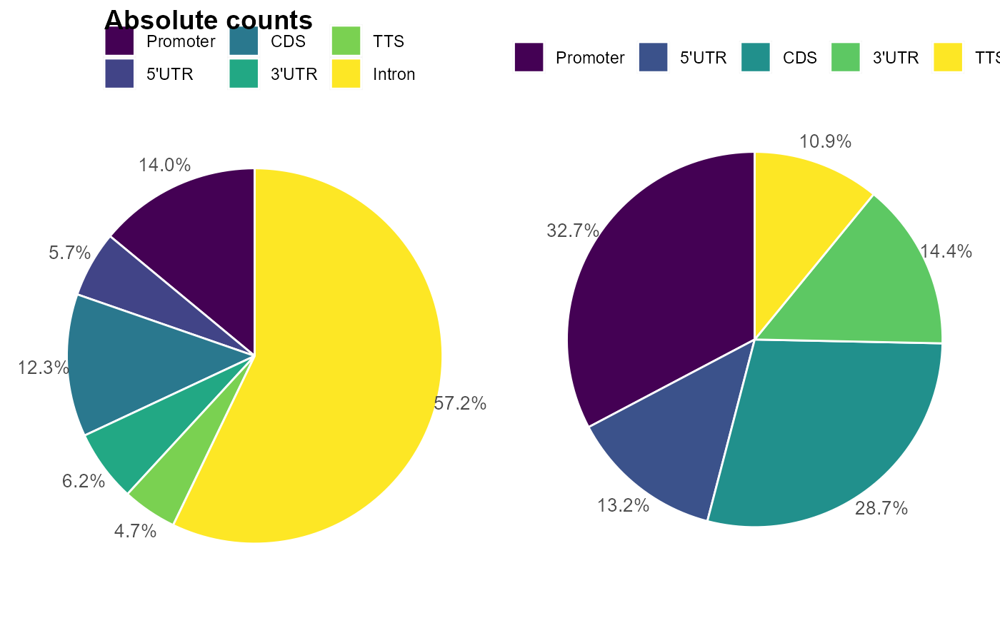
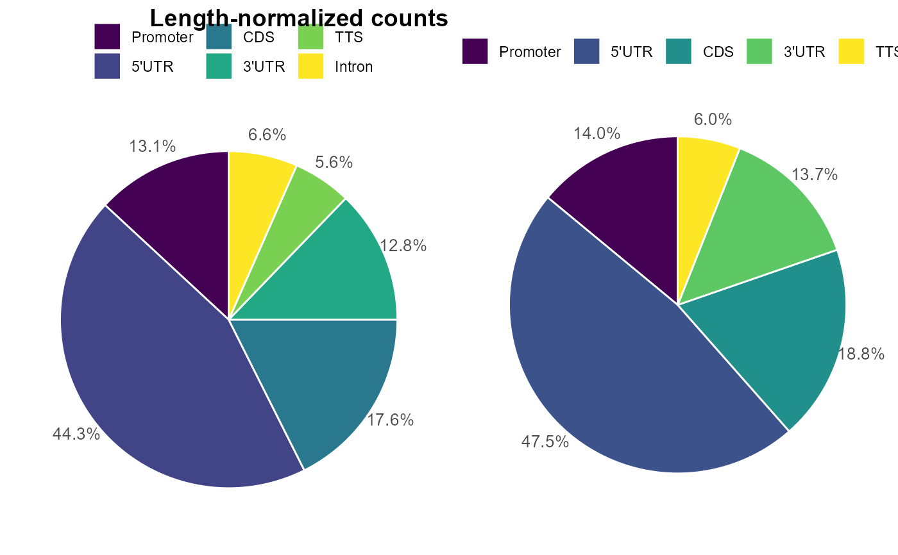

Produce a table of transcripts targeted by peaks, and generate plots for target gene types, and peak distribution in genomic features
plot_peak_annotation(
peakFile,
gtfFile,
importParams = NULL,
fiveP = -1000,
dsTSS = 300,
threeP = 1000,
simple = FALSE,
outPrefix = NULL,
verbose = FALSE,
hw = c(8, 8),
nc = 2
)a string denoting the peak file name, only .bed format is allowed
path to a gene annotation gtf file with gene_biotype field
a list of parameters for handle_input
extension out of the 5' boundary of genes for defining promoter: fiveP TSS + dsTSS
extension downstream of TSS for defining promoter: fiveP TSS + dsTSS
extension out of the 3' boundary of genes for defining termination region: -0 TTS + threeP
logical, indicating whether 5'UTR and 3'UTR are annotated in the gtffile
a string denoting output file name in pdf format
logical, to indicate whether to write the annotation results to a file
a vector of two elements specifying the height and width of the output figures
number of cores for parallel processing
a list of two dataframes, 'annotation' is the annotation per peak, 'stat' is the summary stats for pie chart
gtfFile <- system.file("extdata", "gencode.v19.annotation_chr19.gtf", package = "GenomicPlot")
centerFile <- system.file("extdata", "test_chip_peak_chr19.bed", package = "GenomicPlot")
names(centerFile) <- c("summitPeak")
handleBedparams <- list(
fix_width = 0, fix_point = "center", useScore = FALSE, outRle = FALSE,
offset = 0, norm = FALSE, useSizeFactor = FALSE, genome = "hg19"
)
plot_peak_annotation(
peakFile = centerFile, gtfFile = gtfFile, importParams = handleBedparams,
fiveP = -2000, dsTSS = 200, threeP = 2000, simple = FALSE
)
#> Import genomic features from the file as a GRanges object ...
#> OK
#> Prepare the 'metadata' data frame ...
#> OK
#> Make the TxDb object ...
#> Warning: The "phase" metadata column contains non-NA values for features of type
#> stop_codon. This information was ignored.
#> OK
#> Reading existing granges.rds object from C:/Users/greenblatt/AppData/Local/Temp/RtmpiQE4hr/temp_libpath167c637a5c73/GenomicPlot/extdata/gencode.v19.annotation_chr19.gtf.granges.rds
#> Keeping standard chromosomes only
#> File C:/Users/greenblatt/AppData/Local/Temp/RtmpiQE4hr/temp_libpath167c637a5c73/GenomicPlot/extdata/gencode.v19.annotation_chr19.gtf.granges.rds already exists.
#> Use overwriteObjectAsRds = TRUE to overwrite the file

